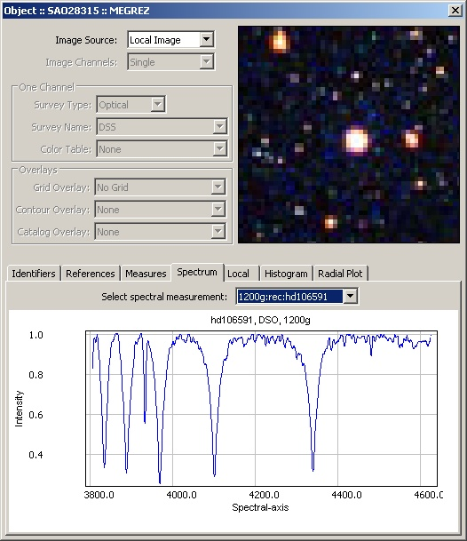
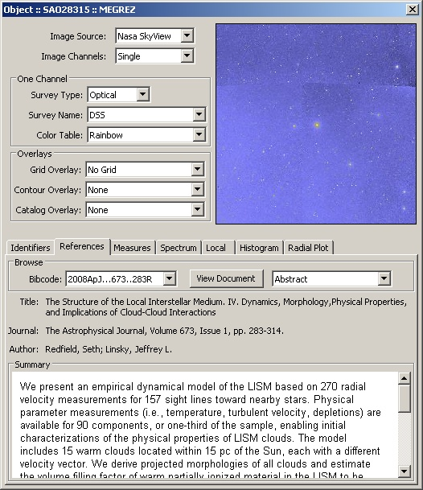

|
uniMap → Sky Object Details (version 0.002 pre-alpha) | |||||||||||||||||||||||
| |||||||||||||||||||||||
|
This tool will provide you with all the information available localy or online about various sky objects types found in your image: stars, galaxies, nebula, asteroids, satellites, supernovas, comets, exo-planets, etc. To access the tool you need to left double-click on any of the objects in you image and a diablog window will pop up. You can also compare your image with other sources available through SkyView and SkyMap.
| |
|
Star/Object Details - Spectral Tab  | |
|
Sky Object Details - with NASA SkyView/DSS image and References tab  | |
|
Objects info/data is fetched from Centre de Données astronomiques de Strasbourg, United States Naval Observatory Flagstaff Station , Centre de Recherche Astrophysique de Lyon, The Extrasolar Planets Encyclopaedia, NASA Orbital Information, NED - NASA/IPAC Extragalactic Database, etc. Some of the object data provided is: | |